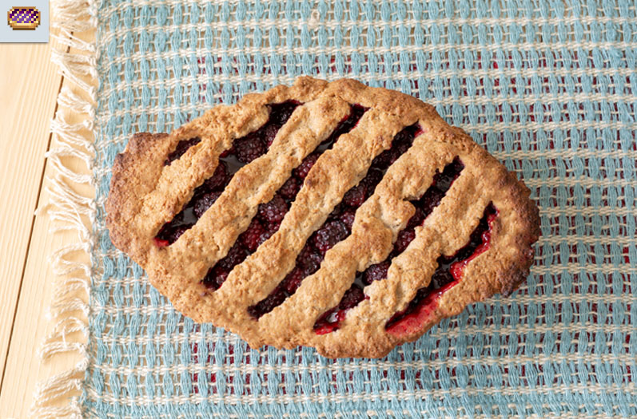

Blackberry Cobbler

The blackberry cobbler from Stardew Valley is a heartwarming dessert that captures the essence of rustic charm and seasonal bounty. Bursting with the vibrant flavor of fresh blackberries, the filling is enhanced with zesty lemon and a touch of honey, creating a delightful balance of sweetness and acidity. As it bakes, the juicy berries bubble beneath a golden, crumbly topping that combines the warm spices of cardamom and cinnamon. The textured crumble offers a satisfying crunch, inviting you to dig in with a spoon. Perfectly comforting and reminiscent of cozy evenings by the fire, this cobbler embodies the simple pleasures of farm-fresh ingredients and home-cooked goodness.
Sweet Blackberry Dessert
- Filling
- 4 cups (1000g) blackberry
- 1 tbsp (2g) lemon zest
- 2 tbsp (35g) lemon juice
- 1/2 cup (125g) sugar
- 1/2 cup (150g) honey
- 1 tsp nutmeg
- 1 tsp (2g) salt
- 2 tbsp (25g) cornstarch
- Crumble
- 1 cup (165g) all-purpose flour
- 1/4 cup (60g) sugar
- 1 tsp (2.5g) cardamom
- 1 tsp (2.5g) ground cinnamon
- 2 tsp baking powder
- 1/2 tsp salt
- 6 tbsp butter, cubed, and cold
- 1/3 cup milk
- Preheat the oven to 375 F
- Combine all the filling ingredients into a medium bowl and let sit for 10 minutes. Transfer into a deep oval shaped baking dish and press down. Avoid putting the liquid in, you don’t want the crumble to be overly liquidy.
- Combine the flour, sugar, cardamom, cinnamon, baking powder, and salt in another medium bowl. Add the cubed butter. Using your hands, combine the butter with the dry ingredients until it resembles coarse meal. Add the milk and mix until combined.
- Cover the filling with the crumble. Try to set it up in angled lines to match the image in-game. Place in the oven and bake for 45-55 minutes or until the crumble is golden brown.